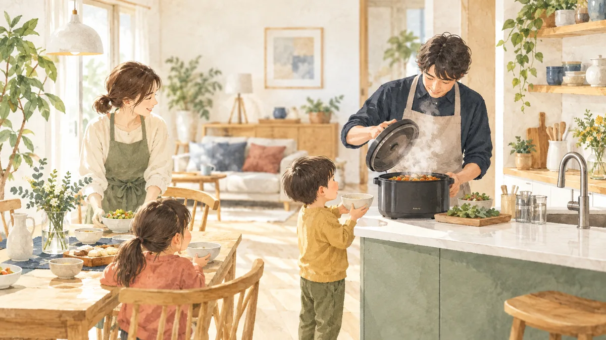

A journal for family living
運営者情報
広告掲載について
01
ふるさと納税
02
宅配食
03
食品
04
家電
05
日用品
06
家具
07
旅行
08
家計・節約
トップ
家電
Category
04
Appliances
家電
家事の時間と電気代を減らす家電の選び方。
7 記事

家電
2026.11.23
電気圧力鍋の
おすすめは？家族 4 人の
容量
、
1 回の
電気代
、
ふたが
開くまでの
総時間と
パッキン代で 8 機種を
比べる
電気圧力鍋・自動調理鍋 8 機種を、メーカー公式の満水・調理容量、消費電力、最高圧力、予約時間と楽天市場の価格で比べます。家族 4 人の容量の目安、予熱と減圧を含めた総時間と 1 回の電気代の上限、ガス火の圧力鍋との違い、パッキン交換の費用、共働きの平日の使い方まで整理します（2026 年 10 月時点）。
家電
2026.11.16
衣類乾燥機の
おすすめは
家の
条件で
決まる
。
ガス・電気・ドラム式・除湿機の 1 回の
費用と
時間
、
置けない
家の
代替
衣類乾燥機（ガス式の乾太くん・電気式・ドラム式洗濯乾燥機・衣類乾燥除湿機）を、メーカー公表の乾燥時間と消費量から 1 回と 1 年の費用、本体価格、設置条件（ガス栓・排湿筒・15A コンセント・スタンド）で比べ、家族 4 人の洗濯量 6kg での選び方と置けない家の代替を整理します（2026 年 10 月時点）。
家電
2026.11.11
布団乾燥機の
おすすめの
選び方
。
マットなし 5 機種の
ダニ対策の
温度・時間と 1 回の
電気代
布団乾燥機をマットの有無・ノズル数・ダニ対策コースの温度と時間・消費電力で比べ、1 回の電気代を 31 円/kWh で計算。家族の布団の枚数別の運用時間、天日干し・コインランドリーとの費用比較、ダニ対策の手順と失敗例を、メーカー公式と東京都・日本アレルギー学会の資料で整理します（2026 年 10 月時点）。
家電
2026.11.04
加湿器おすすめの
選び方
。
スチーム・気化・ハイブリッド・超音波の 1 時間の
電気代と
手入れ
、
安全性を
実機 6 台で
比較
加湿器を、スチーム式・気化式・ハイブリッド式・超音波式の実機 6 台の公式仕様で比較。1 時間の電気代（31 円/kWh）、冬 5 か月の電気代、加湿 1L あたりの費用、適用畳数、手入れの頻度、NITE・消費者庁が注意する子どものやけど、子ども部屋・寝室・リビング別の選び方を整理します（2026 年 10 月時点）。
家電
2026.10.26
共働き家族の
時短家電
。
食洗機と
ドラム式洗濯乾燥機の
年間費用と
、
どちらを
先に
買うか
共働き・子育て世帯の時短家電、食洗機とドラム式洗濯乾燥機を、メーカー公表の 1 回の水量・消費電力量と 31 円/kWh・水道単価から年間費用で比べ、ヒートポンプとヒーターの差、どちらを先に買うかの分岐、買う前に測る寸法、失敗例を整理します（2026 年 10 月時点）。
Related
家電に関係する記事
家計・節約
2026.10.27
電気代・水道代を
減らす
道具
。
LED・節水シャワーヘッドなど 7 種の
月の
削減額と
回収月数
LED 電球、節水シャワーヘッド、断熱カーテン、すきまテープ、窓フィルム、サーキュレーター、待機電力カットの 7 種類を、資源エネルギー庁の試算・31 円/kWh・東京都水道局の単価・メーカー公表値・楽天市場の価格から「月の削減額」と「回収月数」で比べます。買う順番と、買わないほうがいい条件も（2026 年 10 月時点）。
ふるさと納税
2026.10.18
家電の
ふるさと納税
。
型番別の
寄付額と
市販価格の
比率
、
お米と
比べた
損得
、
申込み前の
確認 5 点
ふるさと納税の家電は、寄付額に対して市販価格が何割の品なのか。楽天ふるさと納税の家電返礼品 19 件を同じ型番の楽天市場の販売価格と比べ（2026 年 10 月 9 日時点）、カテゴリ別の寄付額の幅、「家電で受け取る」と「店で買って控除の枠はお米に使う」の総額試算、地場産品の条件、型落ち・年末の発送遅れ・設置・保証の失敗例と FAQ を整理します。

 衣類乾燥機の
衣類乾燥機の 加湿器おすすめの
加湿器おすすめの 共働き家族の
共働き家族の 電気代・水道代を
電気代・水道代を 家電の衣類乾燥機の加湿器おすすめの共働き家族の電気代・水道代を家電の
家電の衣類乾燥機の加湿器おすすめの共働き家族の電気代・水道代を家電の